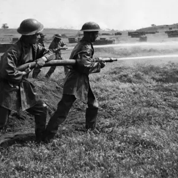

A Segunda Guerra Mundial foi o conflito mais sangrento da nossa história.
De 1939 a 1945, milhões de pessoas perderam suas vidas no campo de batalha.
Este conflito dividiu o mundo entre duas alianças principais: o Eixo (Alemanha, Itália, Japão)
e os Aliados (Reino Unido, EUA, União Soviética, França, China, Brasil, entre outros).
O conflito envolveu dezenas de nações, com foco na expansão territorial do Eixo e
na resistência dos Aliados, terminando com a vitória destes últimos.
